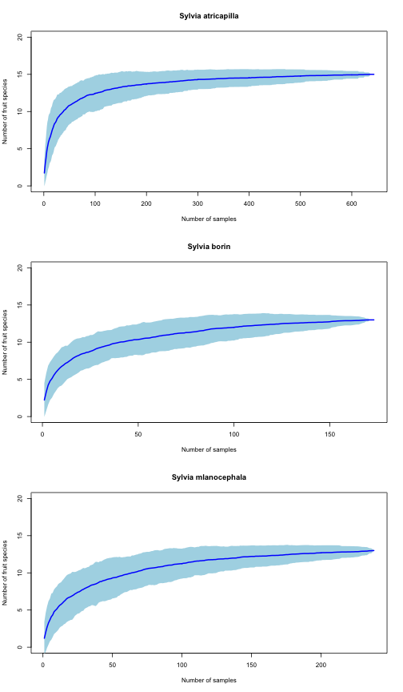

Analysis of acumulation curves for species interactions
Sampling ecological interactions presents similar challenges, problems, potential biases, and constraints as sampling individuals and species in biodiversity inventories. Interactions are just pairwise relationships among individuals of two unrelated species, such as those among plants and their seed dispersers in frugivory interactions or those among plants and their pollinators. Sampling interactions is a fundamental step to build robustly estimated interaction networks, yet few analyses have attempted a formal approach to their sampling protocols. Here I provide a formal approach to interaction sampling by building an explicit analogue to individuals and species sampling, thus extending diversity-monitoring approaches to the characterization of complex networks of ecological interactions.
Interactions in natural ecosystems can be a much better indicator of the richness and diversity of ecosystem functions than a simple list of taxa. Thus, sampling interactions should be a central issue when identifying and diagnosing ecosystem services (e.g., pollination, natural seeding by frugivores, etc.).
When we study mutualistic networks, our goal is to inventor pairwise interactions. Rather than sampling individuals that add species to our inventory, we observe and record feeding observations, visitation, occupancy, presence in pollen loads or in faecal samples, etc., to accumulate pairwise interactions, i.e., lists of species partners. Our goal is to reduce the number of missing cells in our interaction matrices used to tally interactions and to explain the forbidden ones. Interaction accumulation curves (IAC), analogous to species accumulation curves (SAC), can be used to assess the robustness of interactions sampling for plant-animal community datasets. For instance, a random accumulator function (package vegan in R) which finds the mean IAC and its standard deviation from random permutations of the data, or subsampling without replacement can be used to estimate the expected number of pairwise interactions included in a given sampling of records (see below).
Estimating frugivore species richness. A “phytocentric” sampling
We use here a dataset of direct census of animal frugivores visiting Cecropia glaziouvi (Cecropiaceae) trees in Intervales, SP, Brazil (March 2012). We use each tree observed as a census, and we accumulate across trees the number of frugivore species recorded visiting the plant. The idea is that as we sample additional individual trees we may get a more complete account of the actual frugivore species interacting with the plant. Eventually, for a large sample size, the number of frugivore species recorded reaches a plateu, that can be considered a robust estimate of the actual spcies richness of the frugivore assemblage.
# Species (taxa) are in rows. Census samples are the columns. Code
# variables are: cla - Class: Aves, Mammalia ord - Order fam - Family gen
# - Genus sp - Species code - species labels totvis - visits recorded
# totbic - number of fruits pecked sde - effectiveness Then columns cec18,
# cec02... inidicate individual plants. The adjacency matrix entries hold
# the number of records.
#
# We may eventually need these libraries.
require(vegan)
require(ade4)
# Data input. First a dataset with group codes and labels.
accum <- read.table("data/cecropia.txt", header = TRUE,
sep = "\t", dec = ",",
na.strings = "NA")
# I transpose the dataset (needed for accumulation curves).
mat <- data.frame(t(accum[, 10:37])) # Just the adjacency matrix, and we add rownames
colnames(mat) <- accum$code
head(mat[, 1:6])
## Thr_orna Bro_tiri Eup_chal Pyr_fron Coe_flav Cis_leve
## cec18 999 400 0 120 6 0
## cec02 1113 0 20 1 0 0
## cec03 742 0 20 4 1 1
## cec25 49 0 0 0 4 0
## cec22 315 256 4 0 0 0
## cec06 99 16 0 0 0 16
specpool(mat) # This is the species richness estimates
## Species chao chao.se jack1 jack1.se jack2 boot boot.se n
## All 38 50.5 8.457 52.46 5.052 58.35 44.71 2.873 28
# Now, plot the species accumulation curves.
all <- specaccum(mat, method = "random")
plot(all, ci.type = "poly", col = "blue", lwd = 2, ci.lty = 0, ylim = c(0, 45),
ci.col = "lightblue", main = "Cecropia glaziouvi", xlab = "Number of trees",
ylab = "Number of frugivore species")
boxplot(all, col = "yellow", add = TRUE, pch = "+")

Estimating fruit species richness. A “zoocentric” sampling
Here I use a different dataset to assess how the number of interaction records increases with increasing the the number of individual samples. I use a dataset of three Sylvia species, whose diet was analyzed by study of faecal samples. Individual fruit species consumed by the warblers were determined by obtaining faeces from mist-netted birds and identifying seeds and pulp remains. I this way, the number of fruit ingested wa sestimated for a large number of individual birds. I am interested in assessing the robustness of the sampling, i.e., whether increasing the sample size would result in additional species recorded. This type of information can be used with all frugivore species in the community to assess the overall sampling robustnees of an empirical network.
# Reading the dataset, from a matrix of 1054 samples of three warbler
# species: Sylvia atricapilla, Sylvia borin, and Sylvia melanocephala.
# Data input. First a dataset with group codes and labels.
sylvia <- read.table("data/hr_sylvia.txt", header = TRUE, sep = "\t", dec = ".",
na.strings = "NA")
# By species
satr <- sylvia[sylvia$species == "SATR", ][, 4:20]
sbor <- sylvia[sylvia$species == "SBOR", ][, 4:20]
smel <- sylvia[sylvia$species == "SMEL", ][, 4:20]
#
specpool(satr) # Fruit species richness estimates
## Species chao chao.se jack1 jack1.se jack2 boot boot.se n
## All 15 15 0 16 0.9984 17 15.44 0.5453 643
specpool(sbor)
## Species chao chao.se jack1 jack1.se jack2 boot boot.se n
## All 13 13.25 0.7289 13.99 0.9942 13.02 13.71 0.7319 173
specpool(smel)
## Species chao chao.se jack1 jack1.se jack2 boot boot.se n
## All 13 15 3.742 14.99 1.408 15.99 13.93 0.8036 238
# Now, plot the species accumulation curves. Function to estimate
# accumulation curves and plot
spacc <- function(data, thetitle) {
spaccum <- specaccum(data, method = "random")
plot(spaccum, ci.type = "poly", col = "blue", lwd = 2, ci.lty = 0, ylim = c(0,
20), ci.col = "lightblue", main = thetitle, xlab = "Number of samples",
ylab = "Number of fruit species")
# NOT RUN: boxplot(spaccum, col='yellow', add=TRUE, pch='+')
}
par(mfrow = c(3, 1))
spacc(satr, "Sylvia atricapilla")
spacc(sbor, "Sylvia borin")
spacc(smel, "Sylvia mlanocephala")

Accumulation curves for interactions
Now suppose we sample an interaction network. We get data in different samples (i.e., census days) where we record pairwise species interactions. So, each sampling is our adjacency matrix filled up with just those interactions recorded in a particular day. For example, imagine we sample a communtiy with A= 5 animal species and P= 8 plant species:
# Create dummy datasets with pairwise interactions recorded in each
# sampling. List of the sampled matrices. Day 1- getting the pairwise
# interaction labels.
source("vectorize.R")
source("matfills.R") # This creates a randomly-filled matrix
M1 <- randommat(5, 8)
colnames(M1) <- c("P1", "P2", "P3", "P4", "P5", "P6", "P7", "P8")
rownames(M1) <- c("A1", "A2", "A3", "A4", "A5")
MM <- vectorize(M1)
colnames(MM) <- c("A", "P", "I")
head(MM)
## A P I
## 1 A1 P1 0
## 2 A1 P2 0
## 3 A1 P3 0
## 4 A1 P4 0
## 5 A1 P5 0
## 6 A1 P6 0
lab <- paste(MM$A, "-", MM$P)
MM <- data.frame(lab)
# Generate the additional matrices
m <- function() {
mat <- randommat(5, 8)
colnames(mat) <- c("P1", "P2", "P3", "P4", "P5", "P6", "P7", "P8")
rownames(mat) <- c("A1", "A2", "A3", "A4", "A5")
return(mat)
}
# List of matrices (50 samples)
mlist <- list(m(), m(), m(), m(), m(), m(), m(), m(), m(), m(), m(), m(), m(),
m(), m(), m(), m(), m(), m(), m(), m(), m(), m(), m(), m(), m(), m(), m(),
m(), m(), m(), m(), m(), m(), m(), m(), m(), m(), m(), m(), m(), m(), m(),
m(), m(), m(), m(), m(), m(), m())
# mlist should be a list of observed matrices, corresponding to different
# sampling events (censuses, days, etc.)
tt <- sapply(mlist, function(m) cbind(vectorize(m)), simplify = FALSE, USE.NAMES = FALSE)
# Create a dataframe with the pairwise interactions recorded in each
# sample.
ttt <- as.data.frame(unlist(tt, recursive = F))
ttt <- ttt[, c(seq(from = 3, to = 150, by = 3))]
MM <- data.frame(cbind(MM, ttt))
colnames(MM) <- c("Pairwise", rep("sample", 50))
head(MM[, 1:8])
## Pairwise sample sample.1 sample.2 sample.3 sample.4 sample.5 sample.6
## 1 A1 - P1 1 1 0 0 0 0 0
## 2 A1 - P2 0 0 0 0 0 1 0
## 3 A1 - P3 0 0 0 0 0 0 0
## 4 A1 - P4 1 0 0 0 0 0 0
## 5 A1 - P5 1 0 0 0 0 0 1
## 6 A1 - P6 0 1 0 0 0 0 0
Our final dataset now lists all the potential pairwise interactions and the records we got in each sampling day. Each of the columns lists the pairwise interactions recorded (value= 1) in a particular sample. Now we can use accumulation functions to explore how increasing the sampling results in additional distinct interactions being sampled. It is as a sampling of diversity, but instead of species we are recording pairwise interactions.
# Specify only the numerical columns!
mat <- t(MM[, 2:ncol(MM)]) # Note that I transpose the matrix to get
# samples as rows.
specpool(mat) # Statistics
## Species chao chao.se jack1 jack1.se jack2 boot boot.se n
## All 39 41 3.742 40.96 1.386 41.94 40.4 1.166 50
all <- specaccum(mat, method = "random")
plot(all, ci.type = "poly", col = "blue", lwd = 2, ci.lty = 0, ylim = c(0, 40),
ci.col = "lightblue", main = "Accumulation analysis - Interactions", xlab = "Number of censuses/samples",
ylab = "Number of distinct pairwise interactions")
boxplot(all, col = "yellow", add = TRUE, pch = "+")

Suggested references:
- Jordano, P. 1987. Patterns of mutualistic interactions in pollination and seed dispersal: connectance, dependence asymmetries, and coevolution. The American Naturalist 129: 657-677.
- Gotelli, N.J., and R.K. Colwell. 2001. Quantifying biodiversity: procedures and pitfalls in the measurement and comparison of species richness. Ecology Letters 4: 379-391.
- Jordano, P., D. Vázquez, and J. Bascompte. 2009. Redes complejas de interacciones planta-animal. Pages 17-41 in: R. Medel, R. Dirzo, and R. Zamora, Eds. Ecología y evolución de interacciones planta-animal. Editorial Universitaria. Editorial Universitaria, Santiago, Chile.
- Chao, A., R.K. Colwell, C.W. Lin, and N.J. Gotelli. 2009. Sufficient sampling for asymptotic minimum species richness estimators. Ecology 90: 1125-1133.
- Gibson, R. H., B. Knott, T. Eberlein, and J. Memmott. 2011. Sampling method influences the structure of plant-pollinator networks. Oikos 120: 822-831.
- Chacoff, N. P., D. P. Vázquez, S. B. Lomáscolo, E. L. Stevani, J. Dorado, and B. Padrón. 2012. Evaluating sampling completeness in a desert plant-pollinator network. Journal of Animal Ecology 81: 190-200.